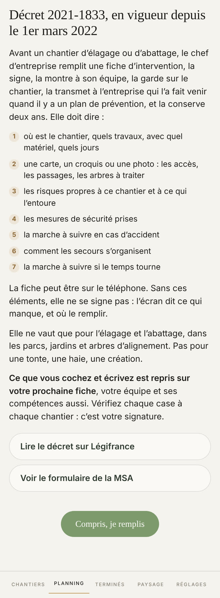
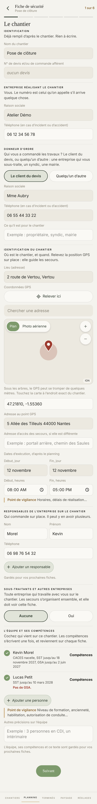
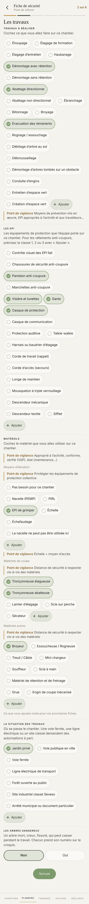
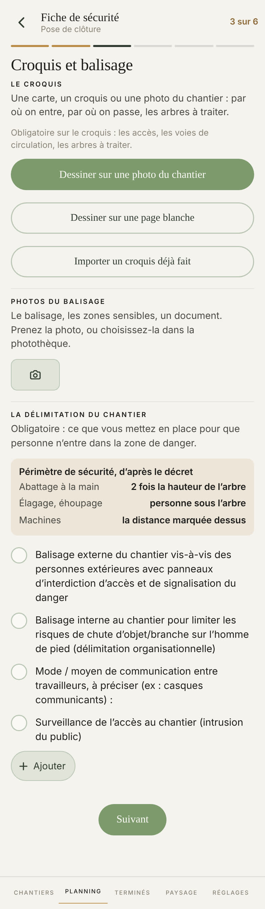
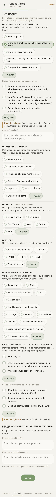
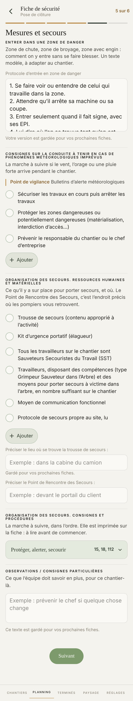
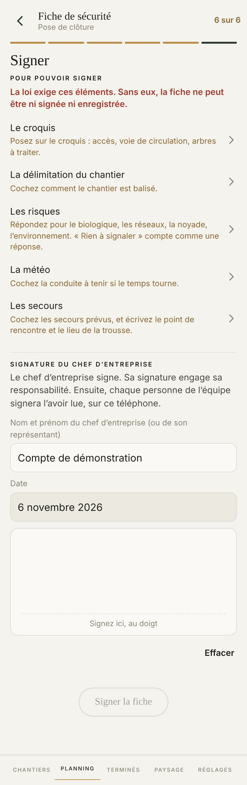
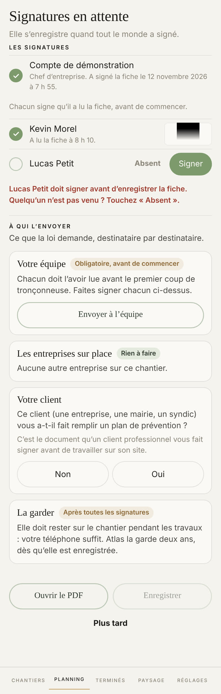

Proposé
Aujourd'hui








Ce qui change
- Chaque partie porte un vrai titre, en grand. Aujourd'hui ce sont de petites capitales de 10 points : en faisant défiler, on ne voit pas où une partie commence.
- À côté de chaque partie que la loi exige : À remplir en ambre, puis Fait en vert dès que c'est rempli. Ce sont les huit points de « Pour pouvoir signer », lus par la même règle.
- Signer montre les huit points, faits ou non, et leur compte : « 3 sur 8 ». Aujourd'hui seuls les manques s'affichent. Un point à remplir emmène toujours à sa partie.
- Une case cochée se voit en plein soleil : fond vert, mot en gras. Les cases passent de 44 à 48 points, les mots de 14 à 15,5.
- Suivant prend toute la largeur, en bas, à la même place sur les six étapes. Aujourd'hui c'est une petite pilule au milieu, posée sur le texte.
- Ce qui vient du chantier (le nom, le client, l'adresse, les jours) s'écrit comme un texte, sans case grise : on ne croit plus pouvoir le changer.
- Le gris clair des explications passe en encre douce : lisible au soleil.
- Le point de vigilance garde ses mots, sans la barre dorée à gauche.
- Les trois façons de faire le croquis deviennent trois lignes : le seul bouton plein de l'écran reste Suivant.
- Les numéros d'urgence s'affichent un par ligne, en gros : on les touche pour appeler.
- « Chercher une adresse » prend la barre de recherche de l'appli, votre règle du 1er novembre.
- Tous les boutons s'écrivent de la même écriture. Aujourd'hui Suivant et Signer sont en serif, Ajouter non.
Ce qui ne bouge pas
- Les six étapes, dans le même ordre, tout à la suite : votre choix du 13 octobre.
- Chaque mot, chaque case, chaque phrase qui explique la loi : rien n'est retiré.
- La signature refusée tant que le minimum légal manque, l'enregistrement refusé tant qu'un présent n'a pas signé.
- Le croquis en plein écran, la carte IGN, la signature au doigt, Absent.
- Votre charte : essayez les huit avec le bouton en haut.
À trancher
- « À remplir » s'affiche dès la première ouverture de la fiche. Ou seulement une fois l'étape passée, pour ne pas voir de l'ambre partout au début ?
Trouvé en regardant
- Dans le PDF, le signe « inférieur ou égal » des tensions électriques ne s'imprime pas : on lit « HTA (U ▯ 50 000 V) ». C'est un défaut, pas une question de goût : il se corrige avec le PDF.
- Sur l'étape 2, sans réponse à « Les arbres dangereux », Suivant refuse avec une phrase en rouge tout en haut, loin du doigt. Proposé : la phrase s'écrit juste au-dessus de Suivant.